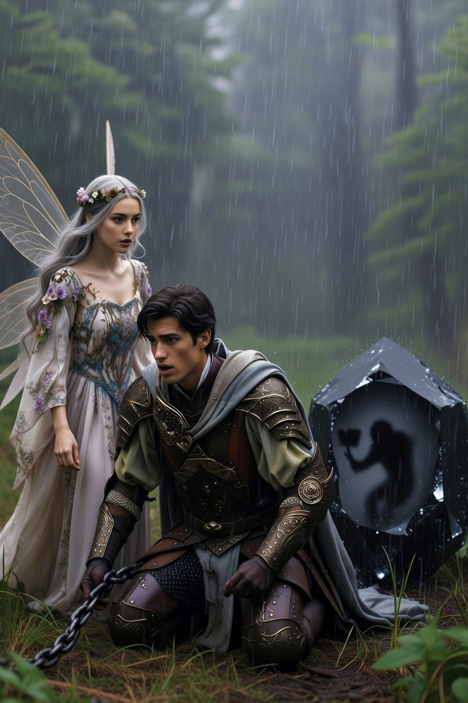
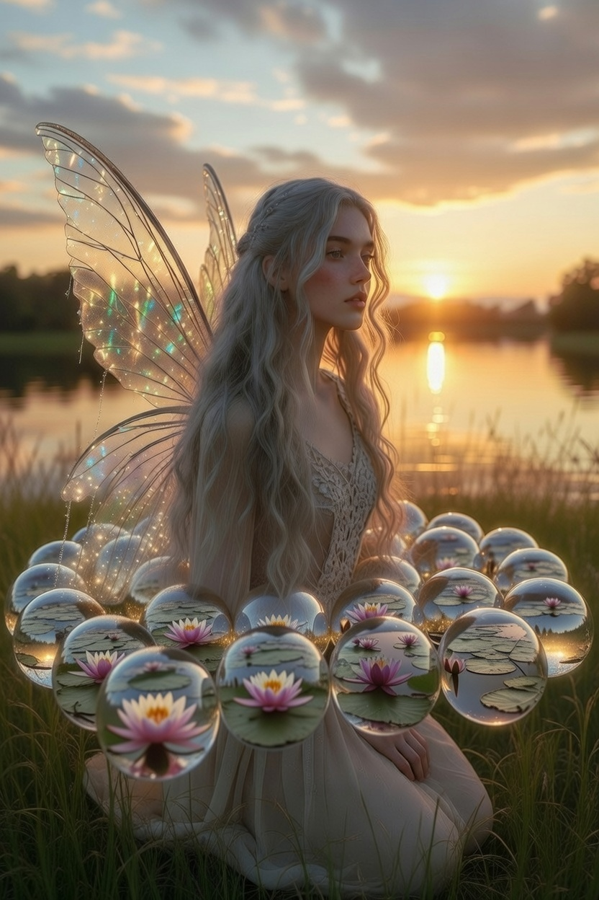
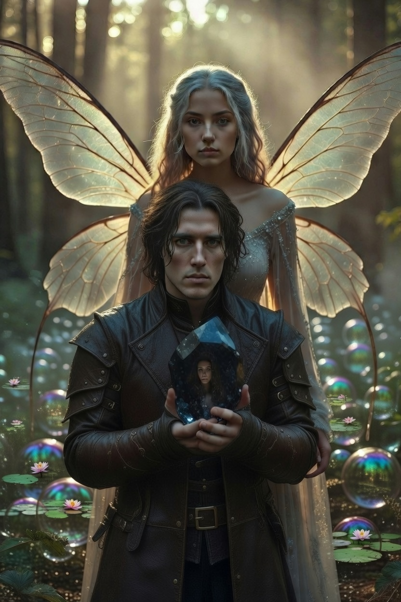
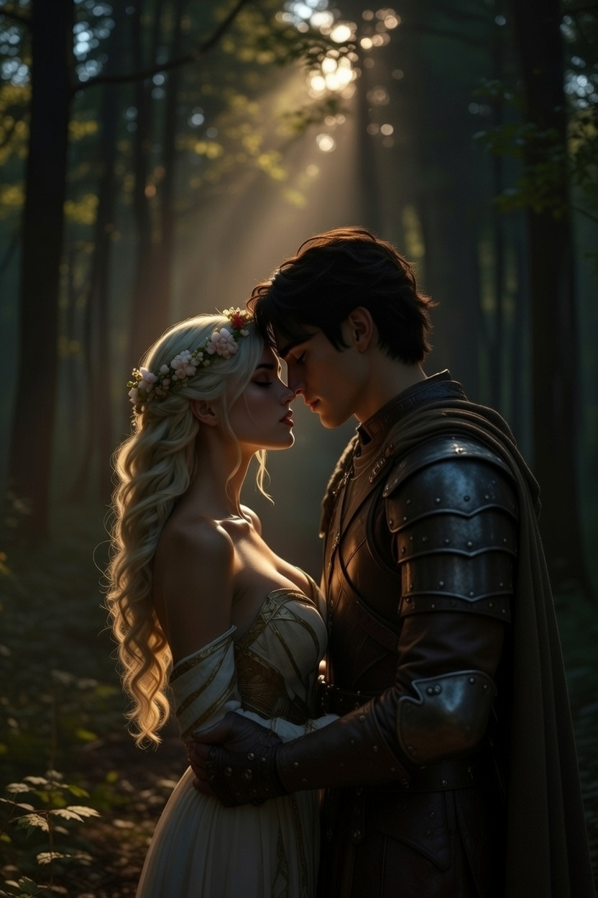

Ajánlom egy kedves barátomnak, aki keresi a pillanatban rejlő örökkévalóságot, és mer hinni a szív órájának szavában.
Ahogy kiléptek a szinesztézia vibráló káoszából, a táj hirtelen elnehezült. A völgy, amelybe értek, nem ködös volt vagy sötét, hanem kristálytiszta, de a levegő sűrűvé vált, mint a méz. Itt minden egyes megtett másodpercnek fizikai kiterjedése volt. Minden lépés olyan erőfeszítést igényelt, mintha térdig gázolnának a sűrű gyantában, és a tüdőjükbe áramló levegőnek fémes, hideg íze volt.
A csend nem néma volt, hanem feszült; a kristálysziklák falai között visszhangzott a saját szívverésük, de az is lassabban dobogott, alkalmazkodva a völgy könyörtelen ritmusához. A fény nem fentről érkezett, hanem magukból a kövekből szivárgott, megvilágítva az út mentén heverő furcsa alakzatokat: más vándorok ottfelejtett, megkövesedett sóhajait és eldobott reményeit.
Alerion hirtelen megtántorodott. A vállára láthatatlan, de mázsás súly nehezedett. Ahogy hátrapillantott, látta, hogy a köpenye mögött hosszú, csillogó kristálylánc húzódik a porban. Minden egyes láncszem egy-egy emlék volt: a csaták zaja, az elbukott bajtársak arcai, a magányos éjszakák a Távoli Sziklák őrtüzénél. A lánc szemei nem voltak egyformák; némelyik éles volt és vágta a földet, mások homályosak, mint a régi fájdalom. Hallotta a láncszemek csörgését, ami nem fémes volt, hanem olyan hangot adott, mint a jég repedése.
– Honóra... mi ez? – nyögte Alerion, miközben a térde megroggyant. A lánc végén egy hatalmas, fekete kristálytömb vonszolódott: az a pillanat, amikor azt hitte, mindent elveszített, mielőtt találkozott a tündérrel. Ez a tömb sötétebb volt minden éjszakánál, és mélyéről tompa dörömbölés hallatszott, mintha a lovag egykori, kétségbeesett énje próbálna kiszabadulni a kő fogságából.
Honóra sem volt könnyebb helyzetben. Mögötte az Időhurok-sziget harminc napja ragyogott fel ezüstös gömbökként, de a gömbök nehezek voltak. Az örökké ismétlődő pillanatok biztonsága most horgonyként húzta őt vissza a földre. Minden egyes gömbben látszott a tó tükröződése, a változatlan naplemente, de a szépségük ellenére minden gömbben ott rejlett a stagnálás ólomsúlya. A tündér szárnyai erőtlenül csüngtek, nem bírták el a múlt állandóságának terhét.
– Ebben a völgyben az időnek tömege van – suttogta Honóra, és az arca sápadt volt az erőfeszítéstől. – Amit nem engedtünk el, az itt súllyá válik. A bűntudat, a nosztalgia, a „mi lett volna, ha...” kérdései mind-mind kővé dermednek.
A völgy alján egy keskeny, meredek emelkedő vezetett felfelé. Ahhoz, hogy kijussanak, át kellett kelniük egy olyan szűkületen, ahol a cipelt kristályláncok egyszerűen nem fértek el. A sziklafalak borotvaélesek voltak, és csak a puszta lélek férhetett át köztük.
– Nem tudok továbbmenni – mondta Alerion, és a homlokán kidagadtak az erek. – A múltam... túl nehéz. Ha elengedem ezeket az emlékeket, ki maradok én? Egy lovag a csatái nélkül csak egy üres páncél.
Honóra odalépett hozzá, bár minden mozdulata olyan volt, mintha víz alatt úszna. – Nem az emléket kell elengedned, Alerion, hanem a súlyát. A bűntudatodat azért, mert túlélted a többieket. A félelmedet, hogy a jövőd nem ér fel a múltadhoz. Az ész azt mondja: ami volt, az megtörtént, és nem változtathatod meg. Miért cipelnéd hát a láncot, ha a tanulságot már a szívedbe vésted?
Alerion lehunyta a szemét. Kezébe vette a fekete kristálytömböt – a legnehezebb gyászát. Megnézte benne az arcát: fiatalabb volt, dühösebb és elveszettebb. Aztán mély levegőt vett, és nem eldobta, hanem egyszerűen kinyitotta a markát.
– Köszönöm, hogy megtanítottál küzdeni – mondta a múltjának –, de már nem te vagy a pajzsom.
A kristálytömb abban a pillanatban füstté vált, és elszállt a völgy felett. Alerion válla kiegyenesedett. A lánc többi szeme nem tűnt el, de pillekönnyűvé vált, mint a gyapot. Már nem húzták őt vissza, hanem díszítették a köpenyét.
Honóra is sorra érintette meg az ezüst gömbjeit. – A Szivárvány-tó az otthonom volt, de most már az út az otthonom. Nem kell a biztonság hurkaiba kapaszkodnom, mert te vagy a biztonságom.
Ahogy mindketten „könnyűvé” váltak, a szűkület kitágult előttük. A völgy kijáratánál a napfény másképp ragyogott: nem volt benne a múlt árnyéka.
– Látod? – kérdezte Honóra, ahogy felléptek az emelkedő tetejére. – A legtöbb vándor azért nem ér célba, mert elfárad a saját története cipelésében. Mi viszont megtanultuk: a múlt arra való, hogy építkezzünk belőle, nem arra, hogy belebetonozzuk magunkat.
Alerion végigsimított a páncélján. – Könnyebb vagyok, mint valaha. De furcsa... most, hogy a múlt nem húz le, szinte félek, hogy elszállok.
– Ezért vagyunk ketten – mosolygott a tündér. – Hogy egymás súlypontjai legyünk.
